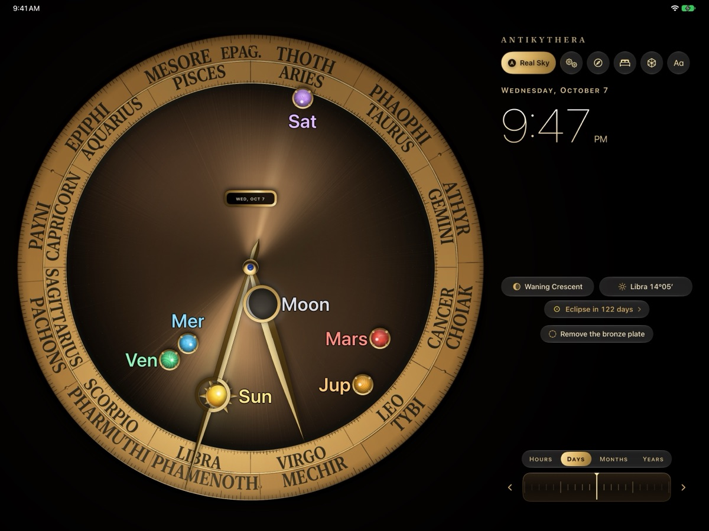
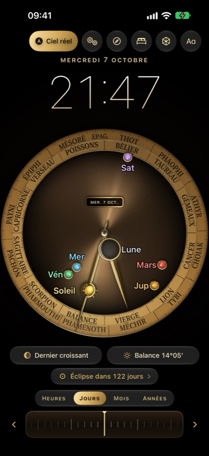

The dial
Turn the crank
The Sun, the Moon with its phase, Mercury, Venus, Mars, Jupiter and Saturn move around the zodiac ring. On iPhone and iPad a wheel runs through hours, days, lunar months and years; on Apple Watch the Digital Crown is the crank.
Tap a celestial body for its card: sign, position, motion and, for the Moon, the phase, the lit fraction and the age. Zodiac and Egyptian month inscriptions in your language or in ancient Greek.

